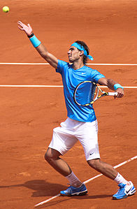
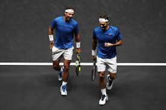
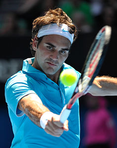
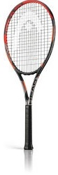

Legendy Tenisa
ur. 3 czerwca 1986 w Manacor, hiszpański tenisista, aktualnie (według stanu na 21 maja 2018) pierwszy w rankingu ATP World Tour, uważany za jednego z najwybitniejszych zawodników w historii dyscypliny. Największe sukcesy odnosi na kortach ziemnych, a liczni eksperci skłaniają się do uznania go za najlepszego zawodnika w historii specjalizującego się w grze na tej nawierzchni. Nadal jest zwycięzcą 16 turniejów wielkoszlemowych.
ur. 8 sierpnia 1981 w Bazylei, szwajcarski tenisista, wieloletni lider rankingu ATP, wicemistrz olimpijski w grze pojedynczej z Londynu (2012), mistrz olimpijski w grze podwójnej z Pekinu (2008), zdobywca Pucharu Davisa 2014.Status profesjonalny Federer otrzymał w roku 1998.Federer uważany jest za najlepszego zawodnika w historii dyscypliny. Ma w swoim dorobku rekordowe 20 zwycięstw w turniejach wielkoszlemowych.



